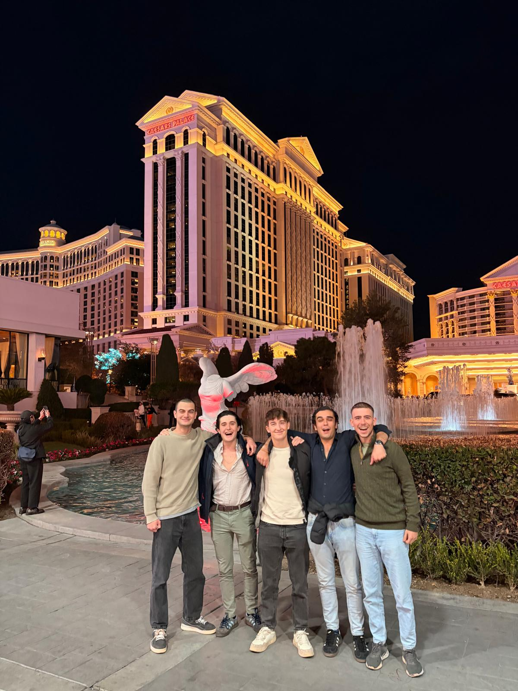

If my previous trips were cultural deep dives, this one was a geographic pilgrimage. For Fall Break, we traded campus for the open road, embarking on the classic American West Coast RV trip. It was a week of staggering landscapes, long highways, and the kind of freedom you can only get with a motorhome and a map.
Our journey began in the artificial glow of Las Vegas. After a whirlwind of lights and sounds, we picked up our new home-on-wheels: a massive RV. Leaving the city behind, our first stop was the sheer, humbling scale of the Grand Canyon. No picture can prepare you for that vastness. From there, we ventured to Antelope Canyon, where we walked through waves of smooth, sculpted sandstone, with light beams cutting through the narrow slots above.

Then came the long haul. We pointed the RV west towards Yosemite National Park. The drive was an event in itself, culminating in a night spent at a remote campsite, where the only light came from a blanket of stars unlike anything we'd ever seen. Waking up in Yosemite Valley felt like entering a cathedral made of granite. We spent days hiking among giants, from the towering face of El Capitan to the serene waters of Mirror Lake. We even had our share of wildlife encounters, with deer grazing peacefully near the roads and the constant chatter of squirrels.
After the raw wilderness of Yosemite, the sleek skyline of San Francisco was a shock to the system. We spent a night exploring the vibrant streets and seeing the Golden Gate Bridge before beginning one of the most beautiful drives in the world: the Pacific Coast Highway. We broke up the journey with a stop in the beautiful, Spanish-style town of Santa Barbara, before finally reaching the urban sprawl of Los Angeles.
Our final push took us south to the laid-back, sunny shores of San Diego before turning inland for the long drive back to where we started: Las Vegas. As a reward for surviving a week in the RV, we splurged on a final night at Caesars Palace. Let me tell you, after days of communal living and campfire meals, the luxury of a king-sized bed and a massive shower felt like the pinnacle of human civilization.
This road trip was more than just a tour of famous places; it was a lesson in contrasts. The silence of the desert versus the noise of the city. The cost of a campground versus a night at a palace. It was the most challenging, exhausting, and utterly magnificent week of my life.